들어가며
이전 장 까지 했던 Redis 구조는 Redis Replication + Redis Sentinel을 이용한 failover 기능을 구성하고 있었습니다. Spring Application에서 Jedis를 이용하여 Application sharding을 구성하여 사용을 하였습니다. 이렇게 Redis를 잘 사용하나 싶었지만, 최근 Spring Cache Abstraction에 대해 공부했었고, Redis Replication + Sharding + Failover를 사용하면서 Spring-Data-Redis를 사용할 방법이 없을까? 라는 생각을 하게 되었습니다.
맨 처음에 회사에서 Spring + Redis연동을 할 때 당연히 Spring-Data-Redis를 염두하고 시작을 했었지만, 어느 블로그에서 Spring-Data-Redis는 Sharding을 지원하지 않는다! 라는 절망적인 얘기를 보고 여태까지 Docker를 이용해 설치한 방식에서 Jedis를 이용한 Sharding을 이용하고 있었습니다.
그 이후, Redis 관련 문서를 쭉 보던 중.. Redis 공식 홈페이지에서 Redis Cluster Mode에 대한 내용을 보게 되었습니다.
그 내용을 요약하자면
- Redis3 버전 부터 Redis는
Cluster Mode를 지원한다. - Cluster Mode에서는 Redis Sentinel의 도움없이
Cluster 자체적으로 Failover를 진행한다. - Cluster Mode에서는 Master-Slave 노드 구조를 가질 수 있고,
노드 간 Replication을 지원한다. - Cluster Mode에서는 redis key의 HashCode에 대해 CRC16의 16384 modules (key%16384) 연산을 실행
Auto Sharding을 지원한다 (이야!!!!!!!!!!!!) - Application Sharding이 필요없기 때문에,
Spring-Data-Redis 사용이 가능하다.
(사실은 이 목적 때문에 Cluster Mode 설치를 해보게 되었습니다.)
기존에 설치한 Redis 구조와 다른 점은?
이전 장까지 설치 했던 Redis 구조
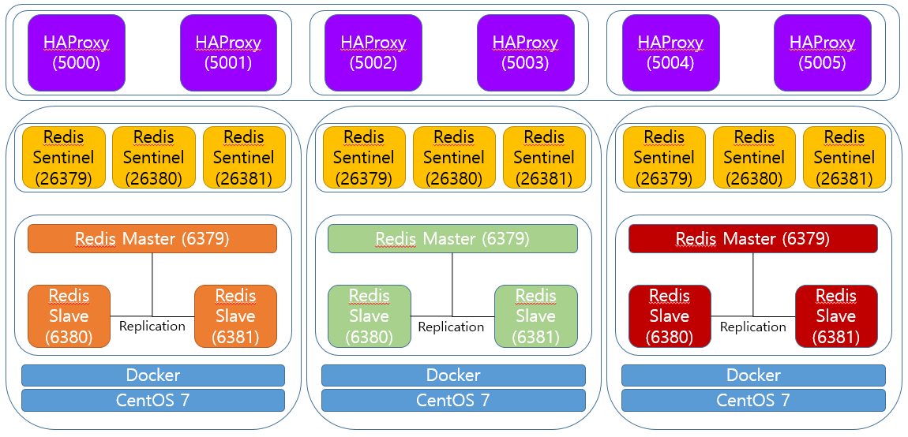
- Master - Slave -Slave 구조
- Redis Sentinel을 이용한 Master 감시 + Fail over 기능 지원
- HAProxy를 이용한 Master / Slave 접근 Port 분리
새롭게 구성한 Redis Cluster
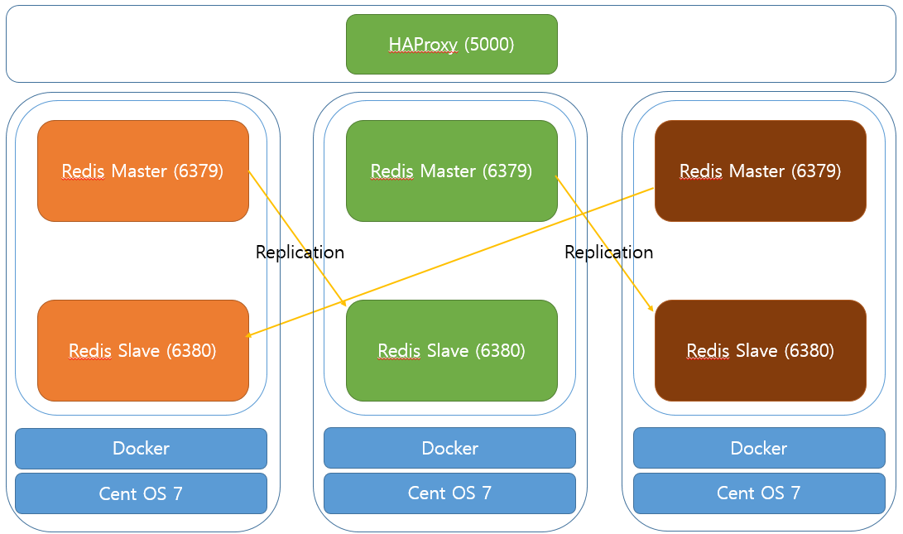
HAProxy는 5000번 포트만 사용하도록 축소 5001~5005는 불필요하기 때문
- 앞으로는 무조건 Master에만 통신
- 어떤 Node와 통신하여 데이터를 set하거나 get 할 수 있음 (Cluster Mode 지원)
- 어떤 Node에 set하더라도 자동으로 Sharding
감시자 역할의 Sentinel 제거
- Cluster Mode에서는 Redis Node끼리 감시하며 Fail over가 가능합니다.
Slave 갯수도 한개로 축소
Cluster Mode에서 지원하는 기능
Fail Over
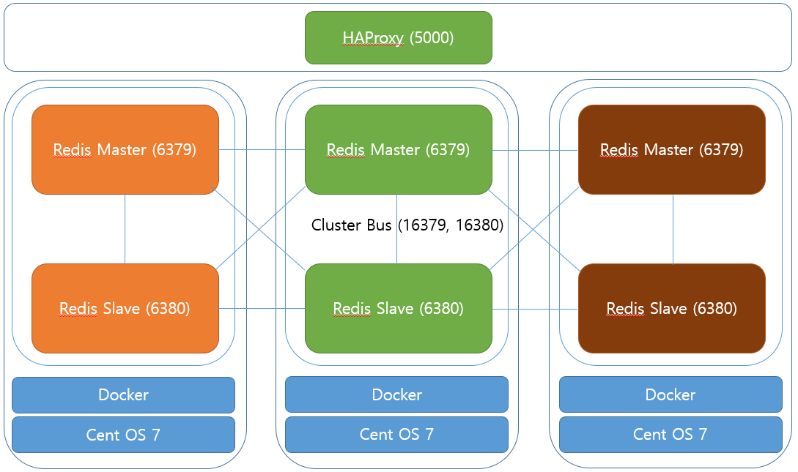
- Redis Cluster Mode에서는 기존의 Sentinel을 별도로 설치하여 감시자 역할을 하는 것에서 벗어나 Cluster 자체적으로 Node들을 감시하고 Failover를 수행 할 수 있습니다.
- Redis Cluster Mode를 사용하기 위해서는 각 Redis Node 별로 2개의 port가 열려 있어야 합니다.
- 6379, 6380 default - Redis 서버 접속 포트
- 16379, 16380 default
(접속 포트 + 10000)- Redis Cluster Bus
- Cluster Bus를 이용해 Redis Cluster는 각 노드를 감시하고 서버 다운 시 또는 Connection 유실 시 Fail over를 수행합니다.
- Cluster Bus는 노드 간 데이터 교환에 대해 다른 바이너리 프로토콜을 사용합니다.
- 이 프로토콜은 대역폭과 처리 시간을 적게 사용하여 노드 간에 정보를 교환하는 데 더 적합합니다.
Auto Sharding
- Redis Cluster Mode에서는 자동으로 Cluster Node에 대한 자동 샤딩을 제공합니다.
- Redis Cluster에는 16384개의 slot이 있으며, slot에 대한 구간 별로 샤딩이 가능합니다.
- slot을 계산하기 위해 redis key의 HashCode에 대해 CRC16의 16384 modules (key%16384) 연산을 실행합니다.
- [0-5500] 까지는 1번 Redis Node에 저장
- [5501-11000] 까지는 2번 Redis Node에 저장
- [11001-16384] 까지는 3번 Redis Node에 저장
- Redis Node가 scale out 되는 경우 Master Node 수를 나눈 만큼 대역이 할당
Redis-cli를 이용한 cluster 명령
Redis 5버전에 포함된 redis-cli 버전 부터 cluster 옵션이 추가 되었습니다.
Redis 4버전 이하에 대해서는 별도로 Ruby 기반의 프로그램을 설치해야 되서 번거로워서, Redis 5버전으로 설치를 해보았습니다. (성능도 더 좋을라나?ㅎ)
Redis Cluster 생성
1 | redis-cli --cluster create 192.168.137.101:6379 192.168.137.102:6379 192.168.137.103:6379 \ |
- Redis Cluster를 생성하기 위해서는 Master Node가 최소 3개 이상 필요합니다.
- 맨 처음 등록하는 3개의 노드가 Master Node
--cluster-replicas 1의 의미는 각 Slave Node가 1개임을 의미합니다.- 6개의 노드가 등록 되었다면 처음 3개는 Master, 뒤의 3개는 Slave가 됩니다
- Slave는 선언된 순서 대로 Master의 Slave로 등록 됩니다
- 192.168.137.101:6379 -> 192.168.137.102:6380
- 192.168.137.102:6379 -> 192.168.137.103:6380
- 192.168.137.103:6379 -> 192.168.137.101:6380
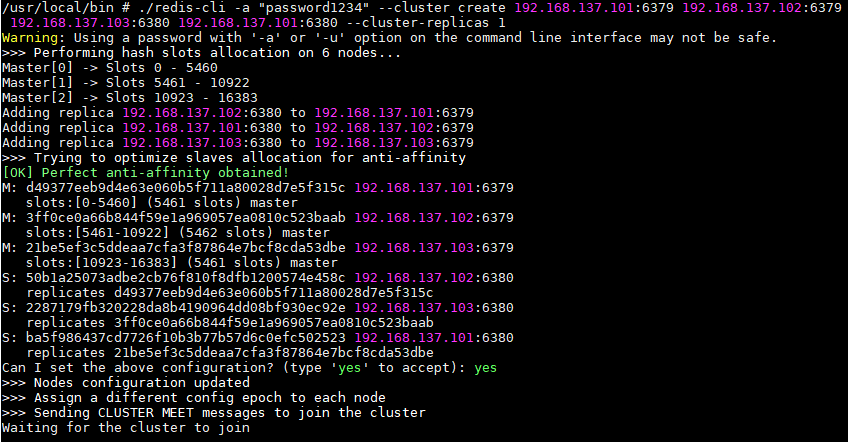
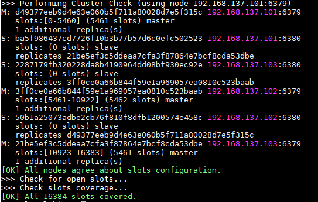
redis-cli에 접속하여 cluster nodes 명령어로 cluster를 구성하는 nodes에 대한 정보를 조회해 보았습니다.
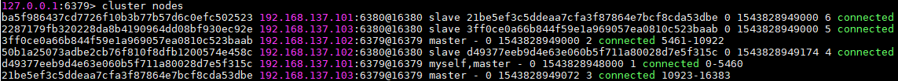
Redis Node ADD / REMOVE
새로운 노드를 추가하는 과정은 기본적으로 2가지입니다.
- 새로운 Master를 추가하는 경우
- 새로운 Slave를 추가하는 경우
Master 추가
1 | redis-cli --cluster add-node 192.168.137.104:6379 192.168.137.101:6379 |
- 위 명령은 cluster에 새로운 노드를 추가하는 명령어입니다.
- 192.168.137.101:6379 구성 된 Cluster에 192.168.137.104:6379 추가한다는 명령어입니다.
- cluster를 지정할 때는 master node를 아무거나 지정하면 됩니다. (192.168.137.101~103:6379)
- 여기까지 했을 때는 Cluster에 일원이 되어 Cluster로 묶여는지나,
실제로 데이터는 저장 되지 않습니다. - hash slot이 할당 되지 않았기 때문에 데이터는 저장되지 않습니다.
re-sharding을 통해 slot의 대역을 할당 받아야 합니다.
Slave 추가
1 | redis-cli --cluster add-node 192.168.137.104:6380 192.168.137.101:6379 --cluster-slave |
- 위 명령은 Redis cluster에 slave를 추가하는 명령어입니다.
- 이 경우에는 새롭게 추가된 노드를
복제본의 수가 적은 마스터나 임의의 마스터에 대한 Slave로 추가됩니다.
1 | redis-cli --cluster add-node 192.168.137.104:6380 192.168.137.101:6379 --cluster-slave\ |
- 위 명령은 Redis cluster에 slave를 추가하는 명령어입니다.
- 이 경우에는 master node를 지정하기 때문에 특정 master-id에 해당하는 master node의 slave로 추가됩니다.
Node 제거
1 | redis-cli --cluster del-node 192.168.137.101:6379 `<node-id>` |
- 위 명령은 Redis Cluster의 node를 제거하는 명령어입니다.
- Redis Cluster에 포함된 아무 node를 적어준다
192.168.137.101:6379 는 Redis Cluster 노드 중 하나 - node-id는 삭제하고자 하는 node의 id입니다.
- node-id는 cluster nodes 명령어를 통해 검색하여 적어줍니다.
- Slave는 막 지울 수 있습니다!
- 하지만 Master는 노드에 저장된 내용이 하나도 없어야 삭제가 가능합니다.
- 지울 수 있는 대안으로는 수동으로 failover를 하여 slave로 만든 다음에 삭제를 하는 방법이 있습니다.
Re-sharding
1 | redis-cli --cluster reshard 192.168.137.101:6379 |
- 위 명령은 현재 cluster에 대한 reshard를 수행하는 명령어입니다.
- cluster내의 master node 아무거나 써주면 자동으로 cluster node를 스캔하여 reshard를 수행합니다.
- resharding 중에도 무중단으로 redis를 사용할 수 있습니다.
- 하지만 resharding을 수행하는 key에 대해서는 lock이 걸립니다.
- 만약 resharding 대상이 많은 경우에는 redis 서버가 중지되었다가 다시 시작 될 수 있습니다.
Redis 설치
Docker 설정하기
docker-compose.yml
1 | version: '3' |
- redis-cli의 cluster option을 사용하기 위해 redis:5.0-alpine 버전을 사용하였습니다.
- redis:5.0.0이 RELEASE 버전이지만, Dockerfile에서 sed 명령어 사용 시,
Permission denied가 발생하는 버그가 있습니다. - network_mode 는
host로 설정.Docker Redis는 NAT에 대한 지원을 하지 않습니다. - 외부 볼륨 연동을 위해 ../../new_redis-data/master 폴더와 docker container 내의 /data 폴더를 연동하였습니다.
- container down 시 항상 재시작 하도록 restart policy를 always로 설정 하였습니다.
docker-entrypoint.sh
1 |
|
- sed명령어를 통해 container내의 redis.conf파일을 치환
치환자에 대한 설정은 docker-compose.yml > environment에 등록- bind 옵션에 대해 CLINET IP를 설정
- port도 기본 6379 port에서 6379, 6380으로 치환하였습니다.
- requirepass도 설정
- masterauth도 requirepass와 동일하게 설정
- cluster-mode를 사용하기 위해
cluster-enable yes로 설정 - cluster에 대한 로그를 볼 수 있도록
cluster-config-file nodes.confconf 파일 지정 (여기에 로그 생성) - cluster failover를 위해
cluster-node-timeout을 5초로 지정
Failover Test
테스트를 위해 192.168.137.101:6379 (master1)에 대한 docker container를 죽여보았습니다.
1 | docker stop 030bb02a246e |
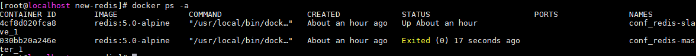
- docker ps -a 명령으로 볼 때 192.168.137.101:6379 (master1)에 대한 docker container가 다운!!
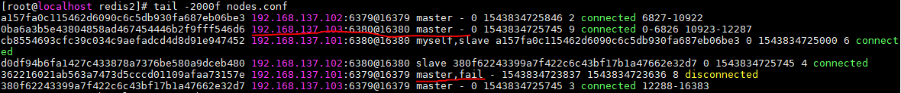
5초 정도 지나니 무슨 로그가 올라왔습니다. epoch vote라는 로그를 보아하니 새로운 마스터를 선출하였습니다.
redis-cli를 통해
cluster nodes를 검색해 보니192.168.137.101:6379 (master1)의 slave였던192.168.137.103:6380 (slave1)가 새로운 master로 promote 되었습니다.
1 | docker start 030bb02a246e |
- docker start 명령으로 다시 container를 살려보았습니다.
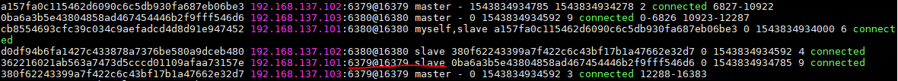
- 기존의 master는 slave로 편입되어 정상적인 cluster가 작동하고 있습니다.
Sharding Test
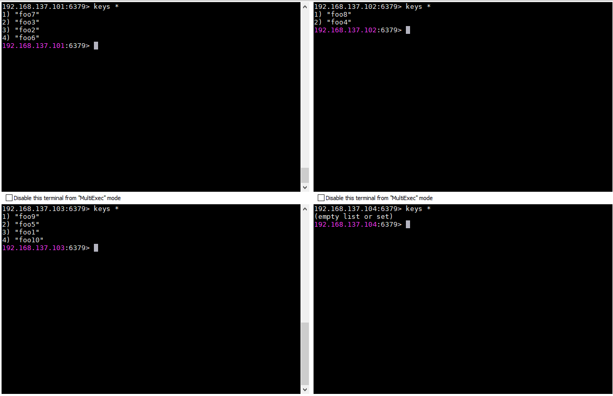
- redis-cli를 통해 foo1~foo10까지 key를 만들어 set해 보았습니다.
- set할때 마다 16384 modules 연산을 통해 slot별로 sharding이 되는 모습입니다.
- 각 redis-cli에서 keys * 명령을 통해 조회 해보면 고르게 sharding이 되어있음을 확인 할 수 있습니다.
Node ADD/REMOVE
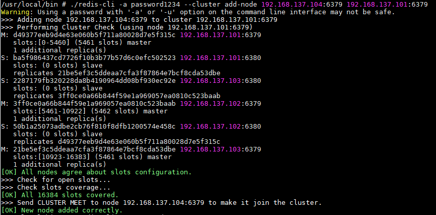
- 신규 Master node (192.168.137.104:6379)를 새로이 추가해 보았습니다.
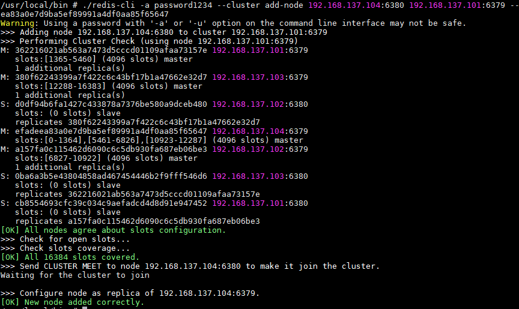
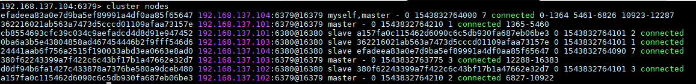
- 신규 Slave node (192.168.137.104:6380)를 새로이 추가해 보았습니다.
- 신규 Master node (192.168.137.104:6379)의 slave로 추가해보았다.
- 정상적으로 모두 등록 되었다.
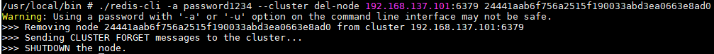
- slave를 삭제해 보았습니다.
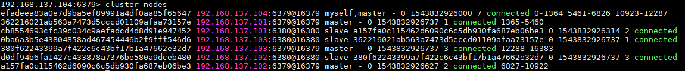
- slave가 정상적으로 삭제 되었습니다.
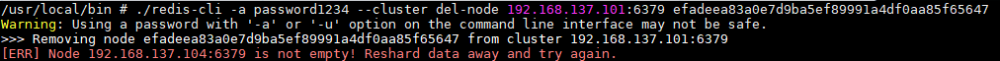
- master 삭제를 시도해 보았습니다.
- slot이 비어있지 않아 삭제가 불가능 했습니다.
- 이런 경우 reshard를 통해 slot을 비워준뒤에 삭제 해야합니다.
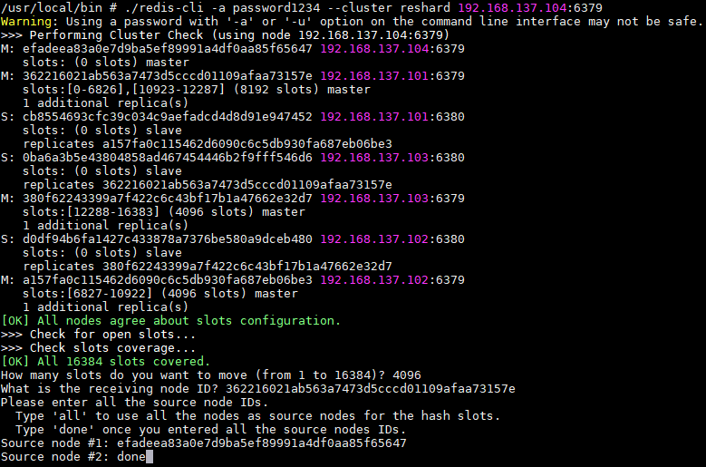
- reshard 명령을 다시 실행 합니다.
What is the receiving node ID?라는 질문에 192.168.137.101:6379 node-id를 지정합니다.Source node항목에는 우리가 삭제할 192.168.137.104:6379 node-id를 지정합니다.source node두번째 항목에는 done을 입력하여 Source node 항목을 모두 입력하였음을 선언해 줍니다.
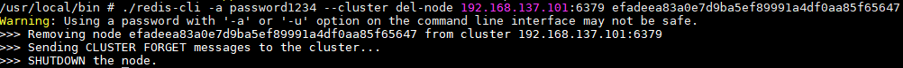
- 다시 master를 삭제하니 정상적으로 삭제가 됩니다.
Re-Sharding Test
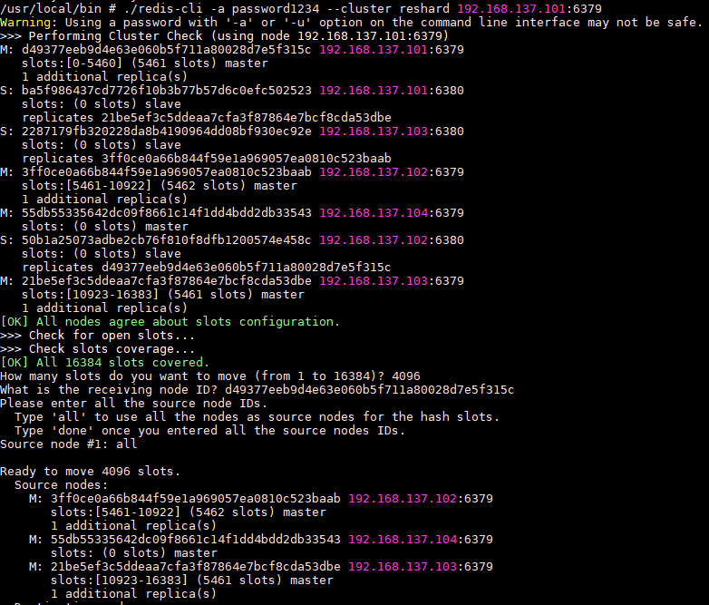
- 새롭게 추가한 노드에 reshard를 해보았습니다.
- 4000개정도를 새로이 옮긴다고 조건을 주고 Resharding을 실행 해보았습니다.
1
Do you want to proceed with the proposed reshard plan (yes/no)? yes
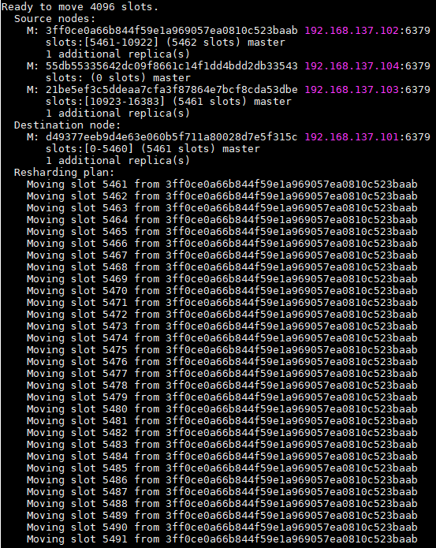
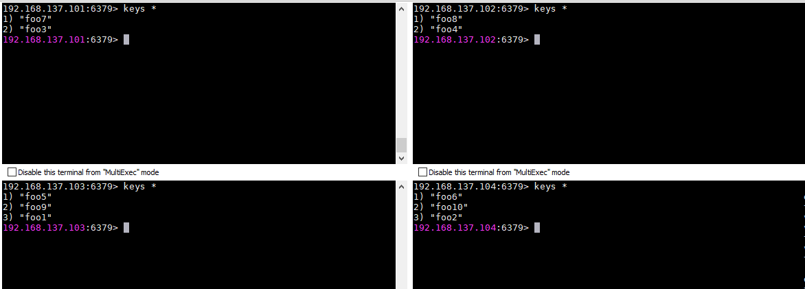
- 정상적으로 resharding이 되어 데이터가 4개의 node에 고르게 분포 되었습니다.